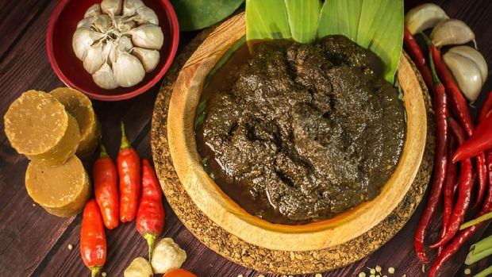

Fried Rice
Rp25.000
Fried rice is an international food that is easy to make. The main
ingredient of fried rice is white rice cooked with a mixture of
seasonings such as shallots and white onions, salt, and sweet soy
sauce.

Pad Thai
Rp100.000
Pad thai is a dish made of thin clear noodles (glass noodles),
deep-fried with fish sauce, bean sprouts, onions, topped with fried
peanuts and ebi. Simply put, pad thai is a Thai fried rice noodle
dish. Many people love pad thai, as it is a combination of salty,
umami, spicy, and sweet flavors,

Pho
Rp50.000
Pho is a well-known international dish from Vietnam. pho is a white
noodle dish similar to vermicelli served in a clear broth with
vegetables, and sliced beef. If not with white noodles, there is
also pho served with macaroni.

Ramen
Rp 40.000
Ramen is Japanese-style noodles served with soup, which is added
with some meat and onion leaves. Ramen is a Japanese food that is
heavily influenced by Chinese cuisine. Usually, ramen is also added
with pieces of meat, such as pork (cha-siu), chicken, or beef.

Rendang
Rp 40.000
Rendang is a traditional food from Minangkabau, West Sumatra.
Rendang is made from meat seasoned with various spices and coconut
milk. The flavor has a slightly spicy taste, which will be even more
delicious if served with rice. Interestingly, rendang is an
Indonesian food that is often referred to as one of the most
delicious foods in the world.

Lasagna
Rp 100.000
Lasagna is a baked pasta dish, part of the Italian diet. Lasagna can
be mixed with many fillings, such as vegetables, chicken, or
according to taste.